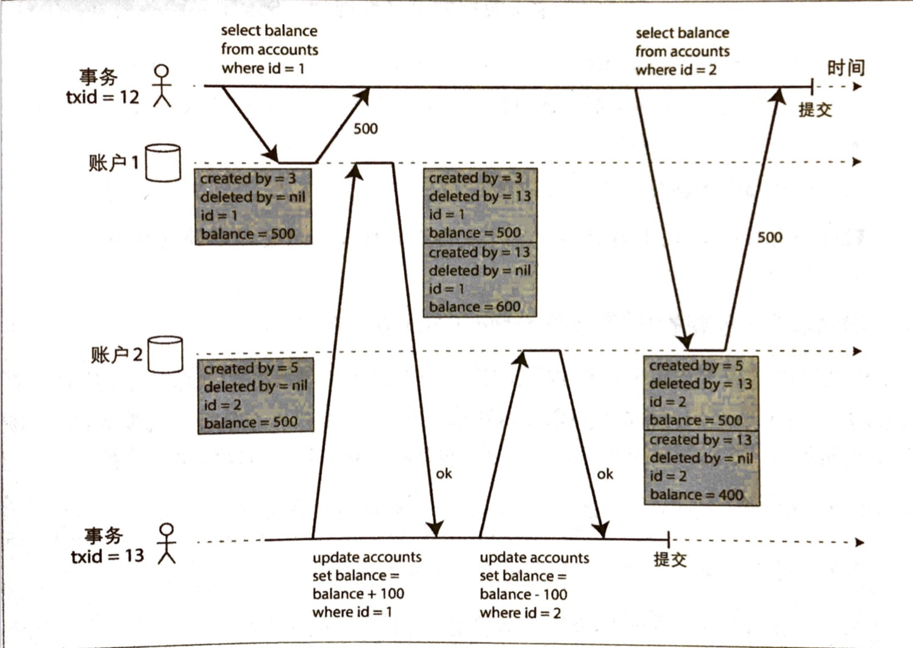
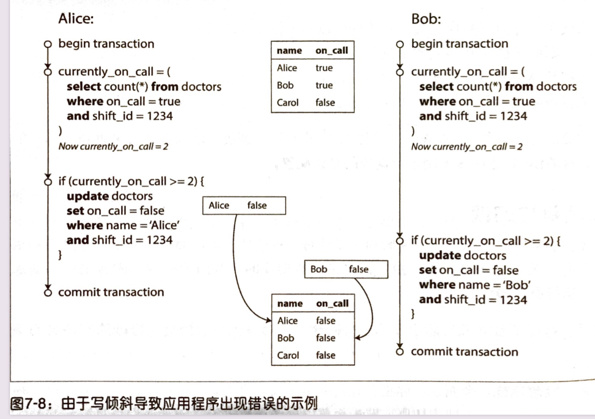
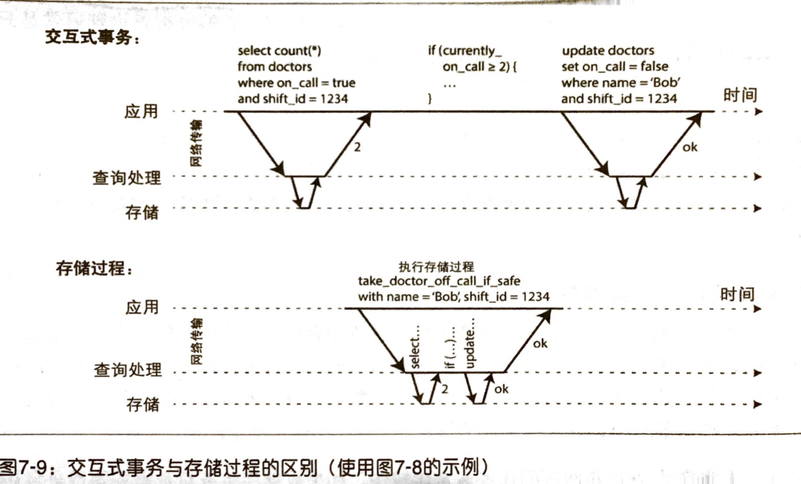
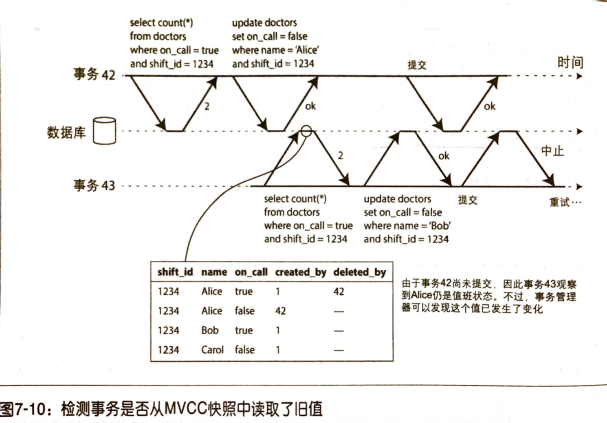

引言
由于数据存储期间，可能发生错误、故障的点特别多，比如网络中断、磁盘写满等，面对这些复杂的情况，应用层应付起来非常困难。所以就有了事务的概念，说道事务，我们最先能想到的就是：可以一次事务中将很多读写入操作打包成一个逻辑操作单元，整个事务不成功（Committed）便成仁（Rollback）。如果失败，应用层可根据情况安全地重试，不用担心部分写入的问题。
总的来说，事务就是一层抽象，为简化应用层编程模型而生！当然，并非所有的数据库都支持事务，但是对关系型数据库而言，这个基本是标配；某些 NoSQL 数据库可能因为性能、可用性以及扩展性考虑，而放弃了对事务的支持。另外，分布式数据库下，事务的实现会更加困难，并且执行开销也很大，但并不代表它不能实现。典型的 分布式关系数据库如 TiDB 以及 Google Spanner 就提供了事务支持。
深入理解 ACID
- Atomicity（原子性）：将多个写操作纳入一个原子事务中，并在故障（进程崩溃、网络中断、磁盘故障）发生时能够及时中止事务，并将部分完成的写入全部丢弃。
Consistency（一致性）：
- 对数据有特定的状态预期，任何数据变更必须满足这些状态约束（或者恒等条件）
- 应用程序应该负责保证这种一致性，数据库只是存储
- 这个更多的是应用层属性，所以 C 原本不属于 ACID，只是作者 Joe Hellerstein 认为听起来顺口就加了进来😢
Isolation（隔离性）：并发执行的多个事务相互隔离，不能相互交叉。经典的教材把其称为可串行化。但实践中，串行化隔离级别较少使用，更多的还是较弱的隔离级别。
Durability（持久性）：数据库承诺，一旦事务提交成功，即便硬件故障或数据库崩溃，事务写入的数据也不会丢失。
- 对于如主从复制的数据库集群，意味着写入的数据复制到了多个节点
- 完美的持久性无法保证（把硬盘拔了、全部机房烧了🔥呢？）
理性看待各家数据库宣称的 ACID 兼容；实际各家实现都可能不同
- 不符合 ACID 标准的系统通常称为 BASE：
- Basically Available
- Soft State
- Eventually Consistency
- ACID 数据库基于这样的理念：如果存在违反 AID 的风险，就放弃整个事务，而非部分放弃！
弱隔离级别
- 安全的并行事务：两个事务间没数据依赖关系，操作的是完全不同的数据
- 不安全的并行事务（会引入竞争条件）：
- A 事务修改了某数据；B 事务又读取该数据；
- A 事务和 B 事务同时修改相同的数据。
- 隔离就是为了保证事务能够安全地并发执行，假装没有发生并发；可串行地隔离意味着数据库会保证事务的执行结果和串行执行结果一致。
- 为何产生弱隔离级别？
- 串行隔离性能不好
- 弱隔离可解决部分并发问题；但是还是需要彻底理解各种隔离级别以及它们可能产生的问题，才能更好地完成业务需求
名词解释
在学习各种隔离级别前，有必要了解如下几个关键要点：
| 要点 | 解释 |
|---|---|
| 脏读 Dirty Read | 在事务 A 中读取到了事务 B 尚未提交的写入。采用 Read Committed 及以上级别可防范。 |
| 脏写 Dirty Write | 在事务 A 中覆盖了事务 B 尚未提交的写入。几乎所有的数据库都可以防止脏写，最简单就是加锁。 |
| 读倾斜（不可重复读） Non-Repeatable Read | 在事务执行期间，不同的时间点读取同一条记录，得到的值不同。快照隔离可轻松应付，通常使用 MVCC 实现快照隔离（如 InnoDB）。 |
| 更新丢失 Lost Update | 两个事务中都执行了 Read-Modify-Write 的操作序列，出现了其中一个覆盖了另一个的写入，但没有包含对方最新值的情况（典型的例子是：读取某个字段->字段值加 1->写入该字段的新值，可能会出现两个事务同时执行了 +1，但最终结果不是预期的 +2 效果）。通常可以采用数据支持的原子写操作，或者使用 SELECT…FOR UPDATE 显式加锁的方式解决；当然，某些快照隔离的实现可以自动防止这种异常 |
| 写倾斜 Write Skew | 典型的场景是：事务中查询数据，再根据查询结果做出决策，最后修改数据库。但是如果事务提交时，支持决策的前提条件不再成立（比如另一个事务中做了修改，导致同样的查询条件，得到的结果不同）。只有串行化隔离级别才能真正防止这种异常 |
| 幻读 Phantom Read | 事务读取了某些符合查询条件的记录，同时另一个事务执行写入，改变了先前的查询结果。快照隔离可防止简单的幻读 |
ANSI SQL 几种隔离级别定义：
实际上各家数据库的支持是不尽相同的😣。
| 级别 | P1 脏读 | P2 不可重复读 | P3 幻读 |
|---|---|---|---|
| Read Uncommitted | 允许 | 允许 | 允许 |
| Read Committed | 禁止 | 允许 | 允许 |
| Repeatable Read | 禁止 | 禁止 | 允许 |
| Serializable | 禁止 | 禁止 | 禁止 |
读已提交
最基本的事务隔离级别，需要提供下面两个保证：
- 防止脏读
- 防止脏写
实现：
- 为了防止脏写，当事务需要修改某个对象（比如行或文档）时，必须要获得该对象的锁，一直持有该锁直到事务提交或中止；
- 为了防止脏读，使用锁的方式虽然也可以实现，但在运行较长时间的写事务会导致许多只读事务等待时间太长，影响只读事务的响应延迟，可操作性差。通常对于每个待更新的对象，数据库维护其旧值和当前持锁事务将要设置的新值两个版本。在事务提交前，所有其它读操作都读取旧值；仅当写事务提交后，才会切换到读取新值。
快照隔离级别和可重复读
Rread Committed 不能解决不可重复读的问题，而在一些场景下就不能容忍：
- 备份
- 分析查询和完整性检查
快照隔离保证每个事务只看到特定时间点的旧数据，不感知其它事务中对数据的修改。读取操作不会阻止写操作，反之亦然。
- 数据库使用了多版本并发控制（Multi-Version Concurrency Control, MVCC）技术来实现快照隔离。而 MVCC 也可以用来实现 Read Committed 隔离级别（只需要保留两个版本即可，已提交的旧数据和尚未提交的新版本数据），典型的做法是对每个不同的查询单独创建一个快照；而快照隔离级别则使用一个快照运行整个事务。
 - 一致性快照中数据可见性规则：
- 事务开始时，创建该对象的事务已经完成提交
- 对象没有被标记删除；或者即便标记了，但是删除事务在当前事务开始的时候尚未提交
防止更新丢失
产生更新丢失的典型场景是：Read-Modify-Write，当两个并发事务在同样的数据记录上执行类似操作时，二者相互不会感知对方的修改值，最终导致某个事务的修改值可能丢失。场景如下：
- 递增计数器；更新账户余额
- 对复杂对象的一部分进行修改（如一个大 JSON 对象）
如何解决？
采用原子写操作（如果数据库支持的话）：
UPDATE counter SET value = value + 1 WHERE id = 1;- 通常采用读取对象并加独占锁的方式来实现（在当前事务未提交前，其它事务也不可读）；或者可以采用单线程执行原子操作
显式加锁：
SELECT * FROM figures WHERE name = 'robot' FOR UPDATE- 对所选行加锁，其它事务若要同时尝试读取对象，则要等待当前正在执行的序列全部完成
自动检测更新丢失：
- 事务管理器如果检测到更新丢失风险，会中止当前事务，强制退回到安全的 R-M-W 方式
- MySQL InnoDB 不支持检测；PostgreSQL 的可重复读、Oracle 可串行化和 SQL Server 快照隔离级别都支持
- 原子比较和设置：
- 只有在上次读取的数据未发生变化时才允许更新；否则回退到 R-M-W 方式
- 使用前需要仔细检查
写倾斜与幻读

写倾斜可以认为是一种更广义的更新丢失问题，即如果两个事务读取相同的一组对象，然后更新其中的一部分：
- 不同的事务更新不同的对象，则可能发生写倾斜
- 不同的事务更新相同的对象，则可能发生脏写或更新丢失
相关场景：
- 会议室预定系统
- 多人游戏
- 声明一个用户名
- 防止双重开支（积分等）
如何应对写倾斜：
- 如值班医生的例子，可以采用
SELECT...FOR UPDATE方式显式加锁，但如果查询结果为空，这样做也不能奏效 - 实体化冲突，比如会议室预定，可以提前将未来 N 个月的对应的所有时间和房间组合创建好，这样显示加锁可以生效
- 采用串行化隔离级别
- 如值班医生的例子，可以采用
串行化
严格串行执行
- 采用单线程按顺序执行事务，避免检测、事务冲突等问题；同时可能会比支持并发的系统效率更高，避免锁的开销
- 为什么可行？
- 内存更便宜
- OLTP 事务通常很快执行完，只产生少量读取
- 典型的代表：VoltDB / H-Store, Redis 和 Datomic
- 通常不能支持交互式的多语句事务（否则得等待太久了）
 - 满足以下约束，串行执行事务科实现串行化隔离：
- 事务必须简短高效
- 仅限于活动数据集完全可以加载到内存的场景
- 写入吞吐必须足够低，才能在单核上处理；否则需要采用分区，但最好不要使用跨分区事务（避免协调开销）
- 跨分区事务可以支持，但占比必须要小
两阶段锁（Two-Phase Lock, 2PL）
- 2PL 是比较老牌的串行化算法，应用于 MySQL InnoDB 和 SQL Server 的「可串行化隔离」和 DB2 的「可重复读隔离」。悲观事务模型。
- 典型特征：
- 读写互斥
- 并发写互斥
基本思路（数据库会为每个对象维护读写锁来隔离读写操作，锁可以处于共享模式或独占模式）：
- 如果事务要读取对象，必须先以共享模式获得锁。多个事务可同时以获得对象的共享锁；但如果某个事务获得了对象的独占锁，则其他事务都需要等待
- 如果事务要修改对象，必须以独占模式获取锁。如果对象已经加锁（不管是读还是写），则该事务必须等待
- 如果事务先读后写，则将共享锁升级为独占锁
- 事务获取锁后，直到事务结束才会释放
两阶段的含义：
- 事务执行前获取锁
- 事务结束后释放锁
2PL 的问题：
- 系统吞吐量和查询响应时间相对于弱隔离级别下降很多
- 锁的开销多；事务的并发性降低
- 访问延迟不确定性高
- 死锁问题，如果检测到死锁，事务会被强行中止（应用层可选择重试）
谓词锁：
- 不属于特定的对象，作用于特定的搜索条件查询到的所有对象
- 可以保护数据库中尚不存在但可能马上会被插入的对象（会引起幻读）
- 2PL 和谓词锁结盟，可阻止任何形式的写倾斜和其它竞争条件，使得隔离真正串行化
- 缺点：性能不佳
索引区间锁（next-key locking）
- 核心就是将保护对象扩大化，不如为谓词锁精确，但开销低，所以实践中常用
- 会对合适的索引加区间锁，如果没有合适的索引，就回退到整张表加共享锁
可串行化快照隔离（Serializable Snapshot Isolation, SSI）
- SSI 是乐观事务模型实现，如果可能发生冲突，也不会阻止事务提交，而是在真正提交时检查是否发生了冲突（即违反隔离性原则），如果是，则会中止并接下来重试。
- 适用于事务之间竞争不大，冲突较少的场景，会比悲观方式高效很多（所以也比较适用于互联网环境）。
- 事务无需等待其它事务所持有的锁，要求读写型事务要简短（长时间的读取事务没有限制）
